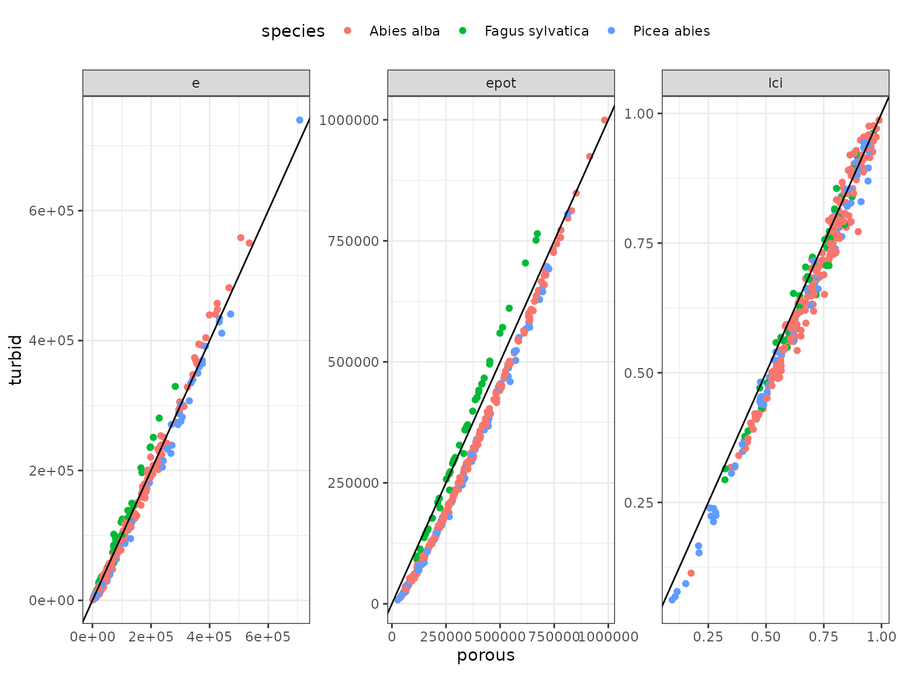
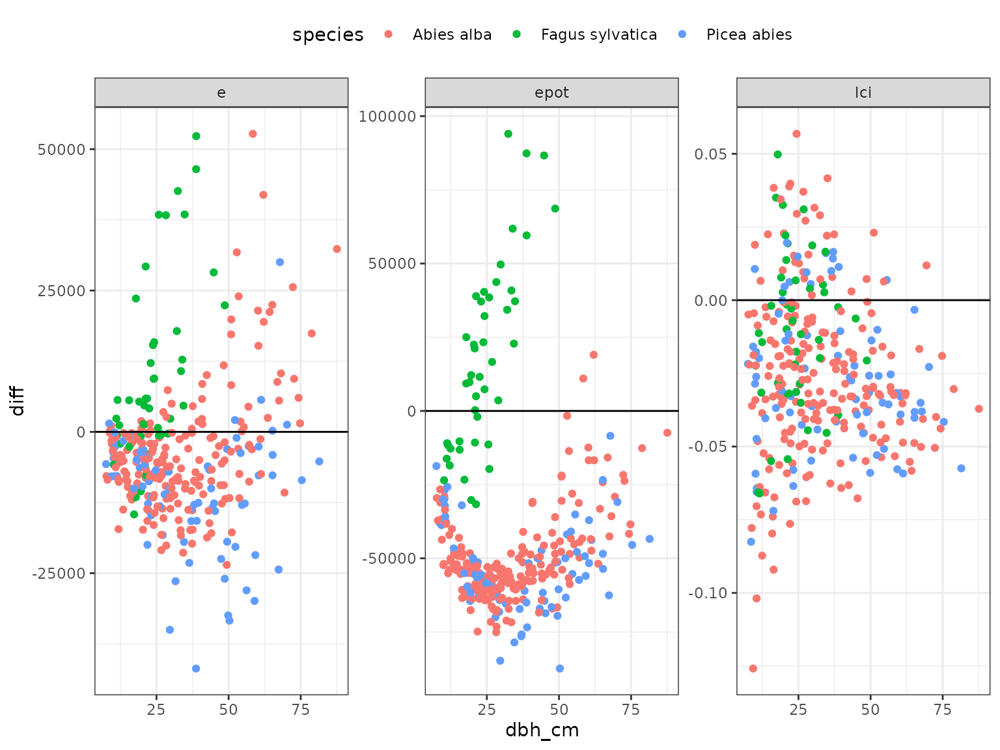

3 - Choose the transmission model
Consider crowns as either a porous envelop or a turbid medium
3-transmission_model.RmdThis is a tutorial which shows you how to choose the transmission model, which allows to represent how a energy of a ray is attenuated throughout its path within a crown.
Understand differences between the two transmisison models
The user can choose between two transmission models by either considering the crowns as a porous envelop or a turbid medium. The two models differ in how the transmitted light is computed when a ray is intercepted by a crown. In the porous envelop model, when a ray crosses a crown, the energy of this ray is decreased by a proportion given by the crown as the crown openness parameter. In the turbid medium, the crown is considered as homogeneous fluid in which the transmitted energy of a ray is computed using the Beer-Lambert law, thus depending on the path length of the ray across the crown and different parameters such as the leaf area density LAD. Those two models are clearly defined in Ligot et al. (2014).
The user may choose between one of the two models, and define the
correct parameter values for each crown depending on the chosen model :
crown_openess for a porous envelop model and
crown_lad for a turbid medium.
Compare both transmission model
Run the SamsaraLight models
# Define cells grid
cell_size <- 5
n_cells_x <- SamsaRaLight::data_prenovel$info[["size_x"]] / cell_size
n_cells_y <- SamsaRaLight::data_prenovel$info[["size_y"]] / cell_size
# Run SamsaraLight with crowns as a porous envelop
sl_out_porous <- SamsaRaLight::sl_run(
# Trees
trees = SamsaRaLight::data_prenovel$trees,
# Radiations
monthly_rad = SamsaRaLight::data_prenovel$radiations,
latitude = SamsaRaLight::data_prenovel$info[["latitude"]],
# Stand geometry
slope = SamsaRaLight::data_prenovel$info[["slope"]],
aspect = SamsaRaLight::data_prenovel$info[["aspect"]],
north_to_x_cw = SamsaRaLight::data_prenovel$info[["north_to_x_cw"]],
cell_size = cell_size,
n_cells_x = n_cells_x,
n_cells_y = n_cells_y,
# Transmission model
turbid_medium = FALSE
)
# Run SamsaraLight with crowns as a turbid medium
sl_out_turbid <- SamsaRaLight::sl_run(
# Trees
trees = SamsaRaLight::data_prenovel$trees,
# Radiations
monthly_rad = SamsaRaLight::data_prenovel$radiations,
latitude = SamsaRaLight::data_prenovel$info[["latitude"]],
# Stand geometry
slope = SamsaRaLight::data_prenovel$info[["slope"]],
aspect = SamsaRaLight::data_prenovel$info[["aspect"]],
north_to_x_cw = SamsaRaLight::data_prenovel$info[["north_to_x_cw"]],
cell_size = cell_size,
n_cells_x = n_cells_x,
n_cells_y = n_cells_y,
# Transmission model
turbid_medium = TRUE
)Compare tree light interceptions
data_comparison <- dplyr::bind_rows(
sl_out_porous$output$trees %>% dplyr::mutate(model = "porous"),
sl_out_turbid$output$trees %>% dplyr::mutate(model = "turbid")
) %>%
dplyr::select(id_tree, model, e, epot, lci) %>%
tidyr::pivot_longer(!c(id_tree, model),
names_to = "var",
values_to = "value") %>%
tidyr::pivot_wider(names_from = "model",
values_from = "value") %>%
dplyr::mutate(diff = turbid - porous) %>%
dplyr::left_join(SamsaRaLight::data_prenovel$trees,
by = "id_tree")
data_comparison %>%
ggplot(aes(y = turbid, x = porous, color = species)) +
geom_point() +
facet_wrap(~var, scale = "free") +
theme_bw() +
theme(legend.position = "top") +
geom_abline(slope = 1, intercept = 0, color = "black")
data_comparison %>%
ggplot(aes(y = diff, x = dbh_cm, color = species)) +
geom_point() +
facet_wrap(~var, scale = "free") +
theme_bw() +
theme(legend.position = "top") +
geom_hline(yintercept = 0, color = "black")